After completing this lesson, you’ll be able to:
You arrived early at the office for a meeting, but someone canceled it at the last minute. Typical! Still, it gives you time to carry out an FME project that has been on your mind: a transformer to calculate the average length of linear features.
Open the starting workspace in FME Workbench (2023.2 or later).
You’ll see that the workspace reads a set of bicycle path data and then does some minor processing to get it into a reasonable state for use in the custom transformer.
You may want to run the workspace to examine the output and see what data we are dealing with, but remember, the custom transformer we create should work on any linear data.
The contents of the transformer will be relatively straightforward, and we’ll start with just two transformers. So, add a LengthCalculator and a StatisticsCalculator transformer to the workspace.
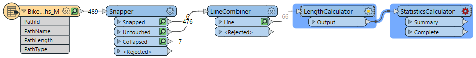
Select the two newly placed transformers and turn them into a custom transformer called AverageLengthCalculator. Ensure you set Attribute References to Handle With Published Parameters, although there aren’t any references to handle now.
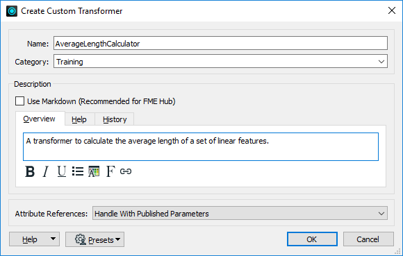
Now we have a new custom transformer, let’s tidy it up and make it functional.
Firstly, rename the input port object to Lines (thus communicating what geometry the transformer expects). Then, add an output port object (if you don’t have one already) and rename it to Output. Then connect it to the StatisticsCalculator's Complete port:
Inspect the StatisticsCalculator parameters. Set the first-row Attribute to _length. Check Mean.
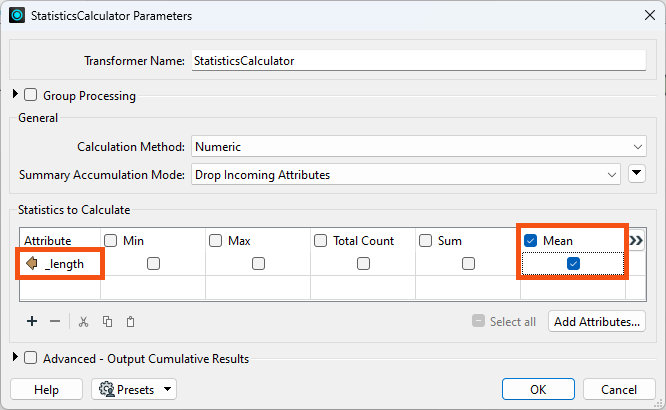
Click OK.
The StatisticsCalculator will now output a variable called _length.mean. Add an AttributeRenamer and rename _length.mean to AverageLength.

Click OK.
Run the workspace and inspect the output to ensure everything works as expected.
Please take note of the
AverageLengthvalue; you’ll need it for the quiz.
Now, let’s experiment with different transformer modes.
Return to the AverageLengthCalculator tab and select File > Export as Custom Transformer from the menu bar. In the Export as Custom Transformer dialog, set Insert Mode to Linked by Default. Make sure the Save Location is the default for storing custom transformers (<user>\Documents\FME\Transformers on Windows):
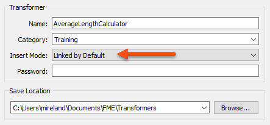
Click OK to close the dialog.
The custom transformer is saved (as AverageLengthCalculator.fmx), and this file will open in a new instance of FME Workbench.
Go back to the instance of FME Workbench where the original workspace is open. The custom transformer is now a cyan color to denote that it is now a linked transformer (it’s linked because we chose “Linked By Default” ):

Right-click the AverageLengthCalculator and choose Embed.
If you wanted to switch back to the linked version, it's as easy as right-click > Link. In a real-life scenario, the mode choice usually depends on whether you plan to share the transformer.
Continuing in embed mode, right-click the transformer and choose Edit. Make any changes to the transformer. Go back to the Main canvas. You’ll find that you can no longer change back to linked mode because the two definitions are now different!
Delete the embedded transformer. FME will prompt you whether you wish to delete the definition, too. Click Yes.
It’s important to realize that the definition of an embedded custom transformer can remain in the workspace even if you don’t use it. If you clicked “No” above, that’s what would have happened. You can tell if such a definition remains by looking in the Embedded Transformers section of the transformer gallery.
You’d usually click No (and keep the definition) if you wanted to use it later. You’d usually click Yes (and remove the definition) if you decide the custom transformer is no longer required.
Select Tools > FME Options on the menu bar. Click the Workbench section and locate and expand the Transformer Options. Check the option to Display the Transformer Version:
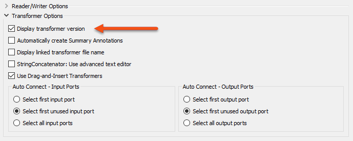
Using the Quick Add menu or the Transformer Gallery, place a new instance of the AverageLengthCalculator custom transformer in the workspace (it is linked by default, which is fine). If you hover the mouse cursor over the transformer, the pop-up text will show version 1.
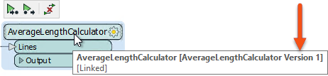
Return to the instance of Workbench where the FMX file is open. Move one of the objects to activate the save button. Then, save the file. Notice that FME does not prompt you to save a new version. That’s because FME has not applied versioning yet. There is only one version of the transformer to edit.
So, leaving Workbench open, close the FMX file. Next, click Open and open AverageLengthCalculator.fmx. Now the transformer definition is in a new editing session, FME will prompt you to apply versioning when you save the transformer.
Click Cancel; we'll save a proper new version in the next step.
Let’s update this transformer rather than just jiggling objects about to prove a point. We could filter data by geometry, so we aren’t trying to measure the length of a point feature or similar.
So, add a GeometryFilter transformer in front of the LengthCalculator. Inspect the parameters, set Mode to Detailed, and select IFMELine and IFMEArc (both under IFMECurve > IFMESegment) as the Output Ports:
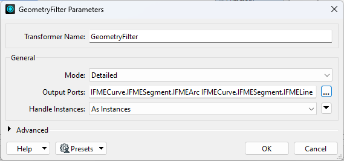
Adjust the feature mapping to connect the Line and Arc ports to the LengthCalculator. Add a second output port object by right-clicking on the canvas and selecting Insert Transformer Output. Call the newly placed port <Rejected> and connect the <Unfiltered> data to it like so:
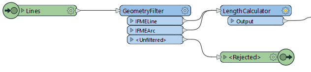
Now click the Save button to save the custom transformer. FME will prompt you whether you want to create a new version. Click the button labeled New Version to do so:
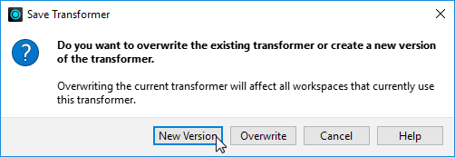
You can tell a new version is created by the information at the very top of the Workbench window, where it should say Version 2.
If you weren’t prompted with the Save Transformer dialog box when you saved, you forgot to close the first edit session. Undo your changes back to how the original custom transformer was (without the GeometryFilter and Rejected output port) and save again. This time, close the .fmx file and re-open it. FME will prompt you to create a new version when you make your changes.
Go back to the instance of FME Workbench where the original workspace is open. Click the refresh button on the Transformer Gallery for FME to scan all custom transformers and discover the new version we’ve just created:
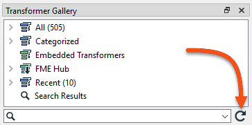
Now right-click on the AverageLengthCalculator custom transformer, and there should be an option to Upgrade To Latest Version. Choose this option:
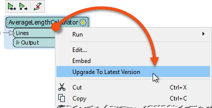
The transformer will be refreshed and updated, which you can tell by the presence of a <Rejected> port and by the tooltip, which should say Version 2.
Now that you have this custom transformer, you have various options to share it.
You can put the transformer into a shared folder and then have other users use Tools > FME Options > Default Paths to link their FME to that shared folder.
You can send (e.g., via email) the fmx file to other users and have them install it on their machines. They can install it by double-clicking the file or saving it to their default FME resource folder.
You can publish the transformer to FME Flow for you (and others) to use there.